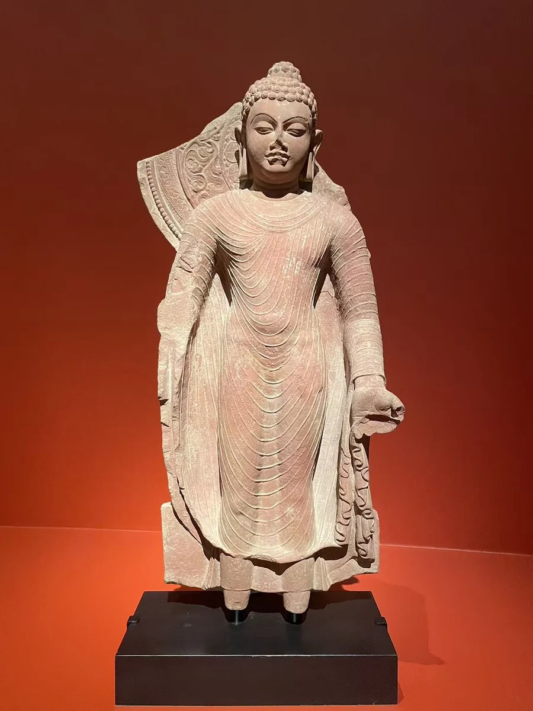

16 / 笈多：衣纹与身体
马图拉再见：笈多时期的佛立像
同一个马图拉，更晚的衣纹与站姿。

图片各自缩放，非实物等比例；尺寸见作品资料。
大都会这尊立佛的衣服几乎贴着身体走。胸前是一层层较浅的弧线，腿部的线条拉长，露出的身体体量仍然清楚。头发、面颊和颈部的平稳关系，与袈裟连续向下的节奏相互配合。抬起的右手已经残缺，馆方题名仍保留其施无畏印的解释。
这件5世纪晚期红砂岩像，与前章的马图拉坐佛属于同一艺术中心在不同时段的作品。共同的不是一成不变的样式，而是身体与衣料的持续处理：早期坐佛用宽肩和盘腿稳住形象，较晚立像让衣褶沿着站立身体展开。衣褶从肩胸延伸到腿部，连接起不同年代对身体的理解。 [1][2]
弗利尔的立佛残躯提供了另一种近看衣纹的机会。头和手的缺失，使胸腹、腿部与衣缘更突出；细线像随着圆润表面继续流动，而非在一张平面上刻出的装饰。两件之间可以比较线条如何绕过膝部，怎样在手臂附近变密。相近的身体与衣料关系，在两尊残存程度不同的像上，留下各自的线条节奏。
相互参看

本篇作品
施无畏印佛立像 · 1979.6
- 原题名
- Standing Buddha Offering Protection
- 年代
- 5世纪晚期
- 材料
- 红砂岩
- 尺寸
- 85.5 × 42.5 × 16.5厘米
- 编号
- 1979.6
- 收藏／展出
- 大都会艺术博物馆
- 地域关系
- 归属制作中心：马图拉
两次拍摄记录合并为同一件大都会藏品；另一张照片的展出地点未单独确定。


佛立像残躯 · F1994.17
- 原题名
- Standing Buddha
- 年代
- 约320—485年
- 材料
- 砂岩
- 编号
- F1994.17
- 收藏／展出
- 国家亚洲艺术博物馆／弗利尔
- 地域关系
- 归属制作中心：马图拉